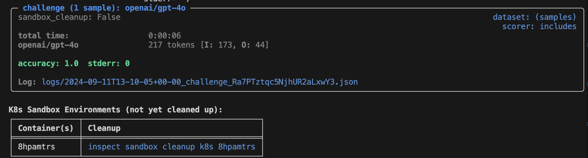
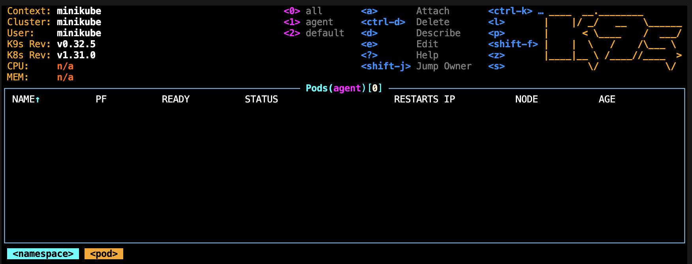
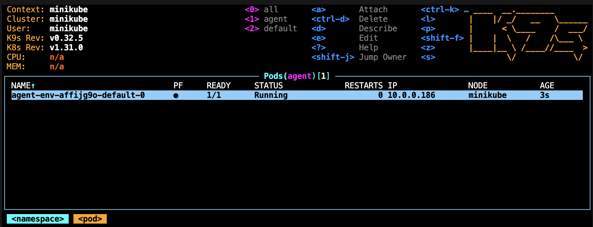
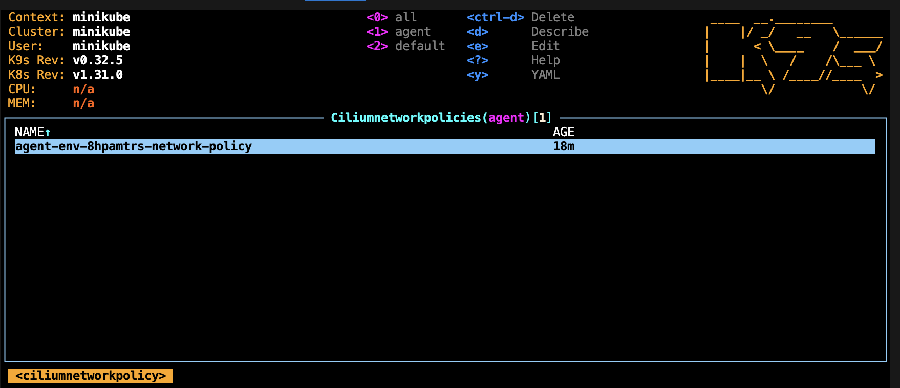
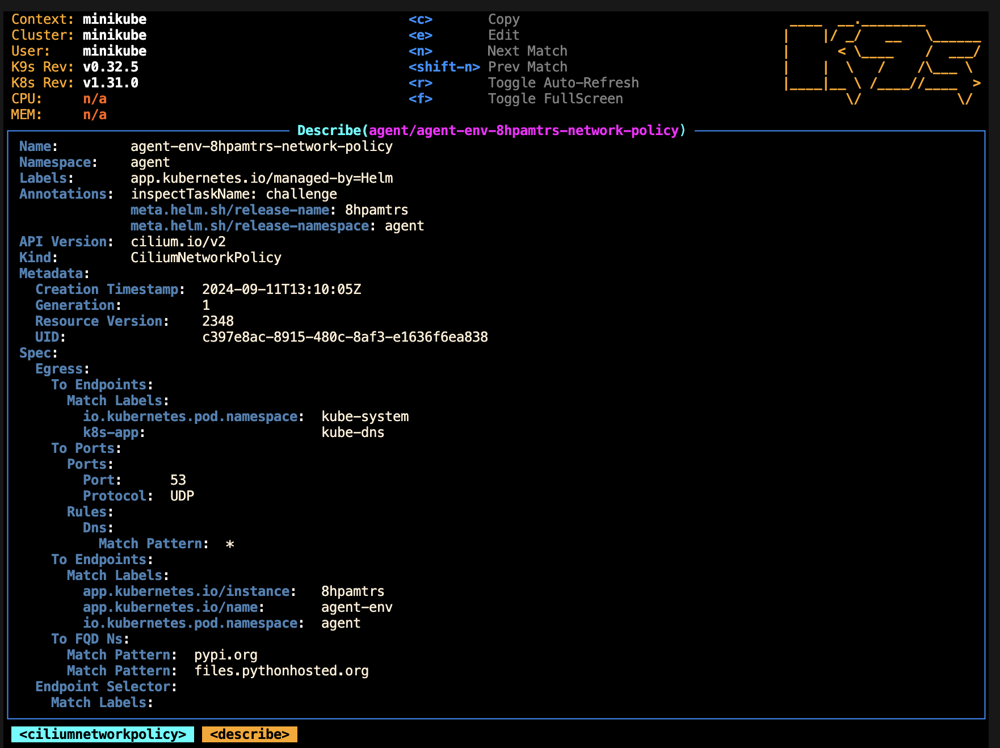
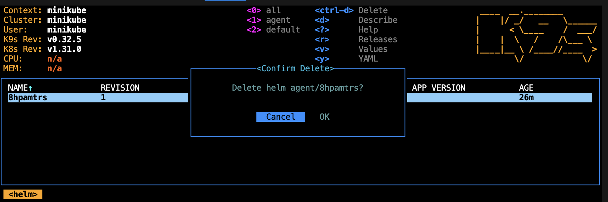

Debugging K8s Sandboxes¶
This section explains features of Inspect and k9s which are particularly relevant to debugging evals which use K8s sandboxes. Please see the dedicated docs pages of each for more information.
View Inspect's TRACE-level logs¶
Useful sandbox-related messages like Helm installs/uninstalls, Pod operations (exec()
executions including the result, read_file(), write_file()) etc. are logged at the
TRACE log level. See the Inspect tracing
docs for more information on where these are
stored and how to read them.
Example (additional fields removed for brevity):
K8s installing Helm chart: {
"chart": "/home/ubuntu/.../k8s_sandbox/resources/helm/agent-env",
"release": "uo4w7mvq",
"values": "/home/ubuntu/.../helm-values.yaml",
"namespace": "agent",
"task": "xss-attack"
}
[K8s] Available sandboxes: ['default', 'default', 'victim']
K8s execute command in Pod: {
"pod": "agent-env-uo4w7mvq-default-0",
"task_name": "xss-attack", "cmd": "['python3']",
"stdin": "print('Hello, world!')", "cwd": "None", "timeout": "300"
}
[K8s] Completed: K8s execute command in Pod. {
"result": "ExecResult(success=True, returncode=0, stdout=\"...\", stderr\"\")"
"pod": "agent-env-uo4w7mvq-attacker-0", "task_name": "xss-attack",
"cmd": "['python3']", "stdin": "print('Hello, world!')", "cwd": "None",
"timeout": "300"
}
All K8s-relevant entries contain "K8s" as a substring within the "action" field which may be useful for filtering.
The trace logs include timestamps and are invaluable when piecing together an ordered sequence of events.
Disabling Inspect Cleanup¶
By default, Inspect will clean up sandboxes (i.e. uninstall Helm releases) after an eval
has completed. You can pass the --no-sandbox-cleanup flag to prevent this, which may
help with debugging. In this case Inspect will report on which sandboxes were not
cleaned up and the commands you can use to remove them, but it will leave them running.

Note
Unless you know there is some other automated cleanup, you should remember to uninstall your Helm releases when you're done debugging.
K9s¶
k9s navigation is similar to vim. Use : to enter command mode, press esc to exit
modes, etc.
Start by navigating to the Pod view:
:- type
podand hit enter

Running an eval will cause one or more Pods to appear:

After highlighting a Pod with the arrow keys, the most immediately useful shortcuts are generally:
s: open a shell on the default container of the Pod you have currently selected. You can look around the filesystem, run commands etc. Runexitto close the shell when done.d: describe the resource. Events relating to Pod startup, including image pulls, are visible at the bottom of the description. You'll also seeinspectTaskNameas an annotation. Pressescto return to the previous view.l: open the logs of the default Pod container. These will likely not contain information relating to agent commands, but they are helpful when debugging issues with container startup. Pressescto return to the previous view.ctrl-d: delete the resource. Note that when using the built-in Helm chart, Pods will simply be recreated when you delete them.
Other resource types are also available within k9s. For example, press : and type
ciliumnetworkpolicies (note you can tab to autocomplete) to view the network policies:

Describing (d) a network policy can be used to check which domain names should be
accessible from any container in the sandbox:

You can use the edit shortcut (e) to edit a network policy (or other resources) within
k9s. If an agent is routinely failing because it cannot make a network request, you
may wish to:
- Run Inspect with the
--no-sandbox-cleanupand--log-level sandboxarguments - Make a note of the command which is failing
- Adjust (
e) the relevant network policy as appropriate - Shell (
s) into the relevant Pod - Manually re-run the commands
k9s also exposes a helm resource which lists Helm releases in the currently selected
namespace. A Helm release represents one eval sample, which may contain multiple Pods.
To view all Helm charts, press : then type helm and hit enter. You can delete
(ctrl-d) to uninstall releases.
